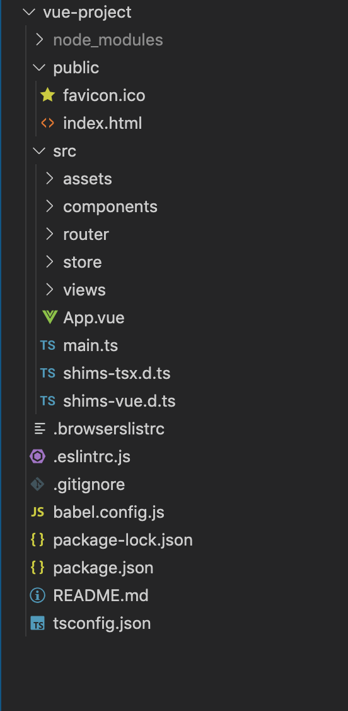
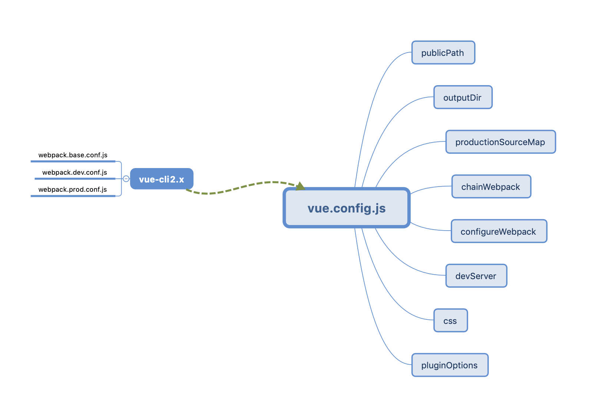
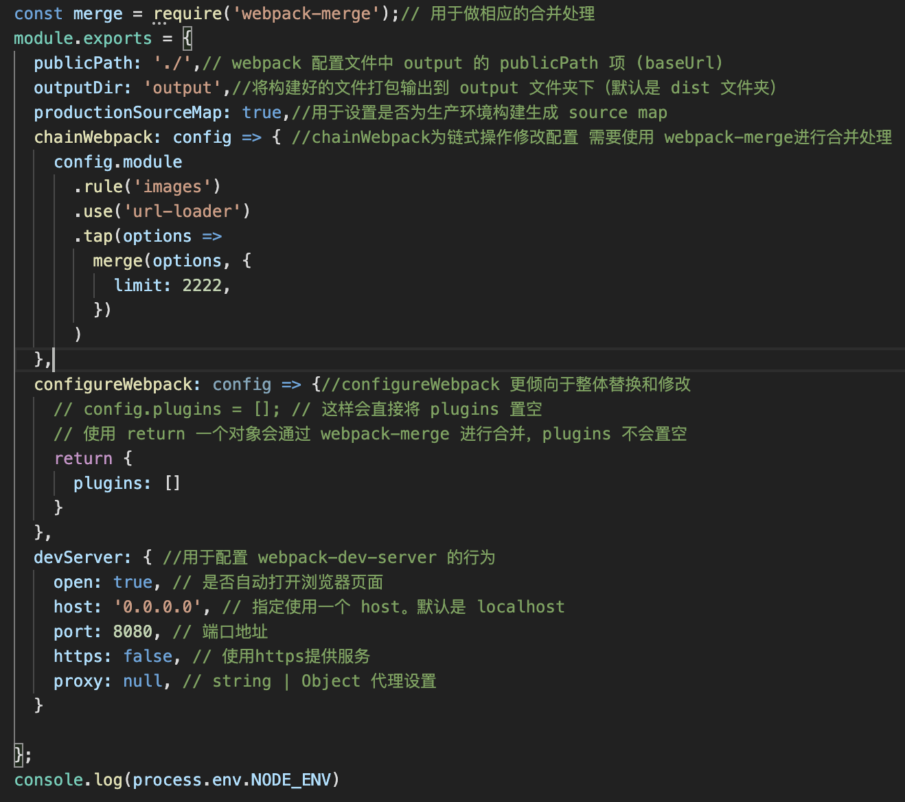
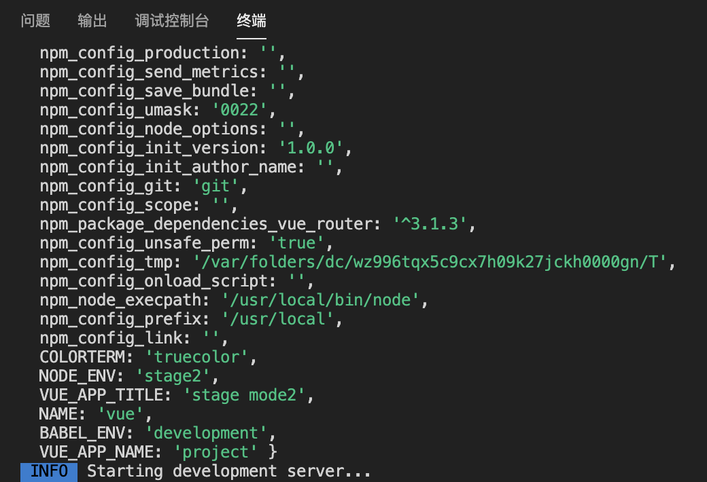
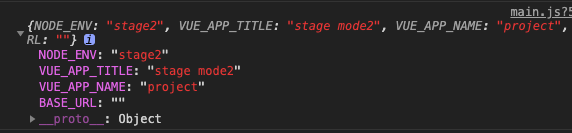
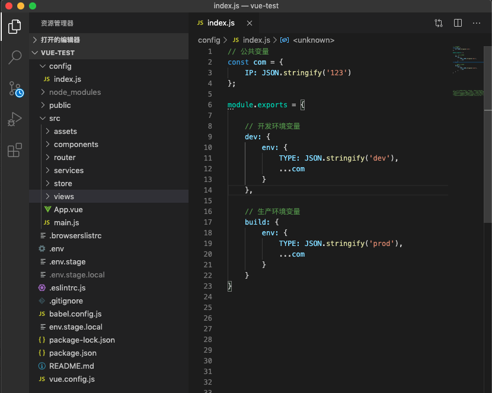
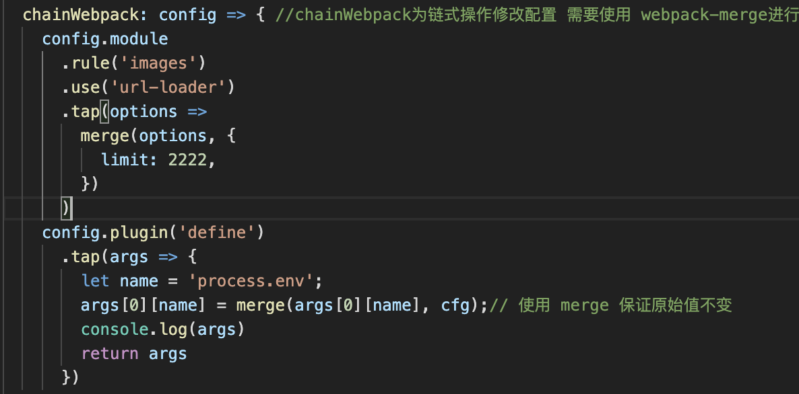
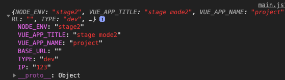
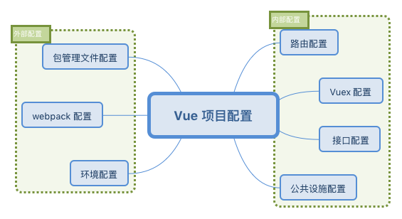
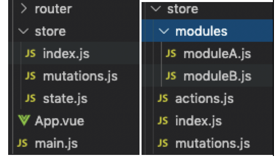

Vue Cli 3.x项目构建与开发
Vue Cli 3.x 项目构建与开发
这里是GitHub项目地址
一、脚手架 CLI 的理解
脚手架 CLI，是一个命令行工具，它的出现主要解决这几个问题：
- 减少重复性工作
- 规范项目开发目录结构
- 统一团队统一开发风格，便于跨团队合作，以及后期维护，降低新人上手成本
- 提供一键前端项目的创建、配置、本地开发、插件扩展等功能，让开发者更多时间专注于业务
二、CLI的基本功能
搭建项目
- 根据用户输入生成配置文件
- 下载指定项目模板
- 在目标目录生成新项目
运行项目
- 本地启动预览
- 热更新
- 语法、代码规范检测
- 代码推送至仓库
- 前端部署的管理后台去进行发布（自动打包）
三、CLI的安装
这里选择的是自定义安装：
- 依赖工具：node、 npm
- 安装 Vue CLI 3.x命令 ：npm i -g @vue/cli
- 构建 vue create my-project
- 可选默认 / 推荐自定义 TS、 Babel、Router、 Vuex、CSS Pre-processors 等
示例如下：


注：除上述命令构建外 还可用 vue ui 可视化 进行构建
生成目录 （选择的配置不同目录也会有差异）

四、NPM包管理与配置项
配置项：一系列键值对构成的 JSON 对象，每一个键值对都有其相应的作用
包管理常用命令：
npm init、npm init -y、npm i、npm i xxx、npm i xxx —-save、npm i xxx --save-dev、npm i -g xxx、npm run xxxvue-cli 3.x还提供了其专属的vue add 命令：以@vue/cli-plugin或者vue-cli-plugin开头， 只能安装 Vue 集成的包（两个特例：vue add router、vue add vuex），同时，vue add不仅会将包安装到你的项目中，其还会改变项目的代码或文件结构，所以安装前最好提交你的代码至仓库
五、webpack在cli3.x
- 与cli2.x中的差异
 - 开箱即用，无需配置 webpack 就可以运行项目，并且提供了 vue.config.js 文件来满足开发者对其封装的 webpack 默认配置的修改 如果项目目录中没有此文件 新建即可；

参考：https://github.com/vuejs/vue-cli/blob/ce3e2d475d63895cbb40f62425bb6b3237469bcd/docs/zh/config/README.md - 默认插件：vue-cli 3.x 为我们默认封装了项目运行的常用 webpack 配置，它给我们提供了默认插件，每一个 plugin的用途 除了使用 vue inspect plugins 查看 还可以通过运行 vue ui 进入可视化页面查看(tasks =>inspect=>run task)
1 | // vue-loader是 webpack 的加载器，允许你以单文件组件的格式编写 Vue 组件 |
六、env文件与环境配置
在实际项目的开发中一般会经历项目的开发阶段、测试阶段和最终上线阶段，每一个阶段对于项目代码的要求可能都不尽相同，那么我们如何能够游刃有余的在不同阶段下使我们的项目呈现不同的效果，使用不同的功能呢？这里就需要引入环境的概念。
一般一个项目都会有以下 3 种环境
- 开发环境（开发阶段，本地开发版本，一般会使用一些调试工具或额外的辅助功能）
- 测试环境（测试阶段，上线前版本，除了一些 bug 的修复，基本不会和上线版本有很大差别）
- 生产环境（上线阶段，正式对外发布的版本，一般会进行优化，关掉错误报告）
6.1 如何配置
默认在配置之前 需要清楚配置的环境关系
生产环境配置、开发环境配置、测试环境配置、公共配置
存在交集 也就是有公共配置 那么如何处理：
1 | .env # 在所有的环境中被载入 |
比如我们创建一个名为 .env.stage 的文件，该文件表明其只在 stage 环境下被加载，在这个文件中，我们可以配置如下键值对的变量：1
2NODE_ENV=stage
VUE_APP_TITLE=stage mode
然后在修改 package.json 中的 serve 脚本的命令为1
"vue-cli-service serve --mode stage"
其实是修改了 webpack 4 中的 mode 配置项为 stage，同时其会读取对应 .env.[model] 文件下的配置，如果没找到对应配置文件，就会用默认环境 development
6.2 环境注入
vue-cli 3.x 封装的 webpack 配置中已经完成了这个功能，所以我们可以直接在客户端代码中打印出 process.env 的值

输出内容除了我们环境配置中的变量外还包含了很多 npm 的信息，但是我们在入口文件 main.js 中打印会发现输出

过滤调了非 VUE_APP_ 开头的变量 是因为webpack 通过 DefinePlugin 内置插件将 process.env 注入到客户端代码中。
6.3 额外配置
以上通过新建配置文件的方式为项目不同环境配置不同的变量值，能够实现项目基本的环境管理，但是 .env 这样的配置文件中的参数目前只支持静态值，无法使用动态参数，当需要实现特定的需求时（如在非生产环境我们可以给自己的移动端项目开启 vConsole 调试/配置中的 BASE_URL 来设置路由的 base 参数），可以在根目录下新建 config 文件夹用于存放一些额外的配置文件。

把环境变量分为了公共变量、开发环境变量和生产环境变量，当然这些变量可能是动态的，比如门店/用户的IP 等。现在我们要在 vue.config.js 里注入这些变量，我们可以使用 chainWebpack 修改 DefinePlugin 中的值：

成功打印

环境的配置和管理对于项目的构建起到了至关重要的作用，通过给项目配置不同的环境不仅可以增加开发的灵活性、提高程序的拓展性，同时也有助于帮助我们去了解并分析项目在不同环境下的运行机制，建立全局观念。
七、页面内部配置
前面部分主要说的是项目构建及运行的前期工作，像webpack 的配置、环境变量的使用等，接下来，走进vue项目的内部，理解内部配置的基本构成。

7.1 Vue 基本配置： 路由配置 src -> router -> index.js
最基础的路由配置，有以下几点需要进行优化：
- 如果路由存在二级目录，需要添加 base 属性，否则默认为 “/“
- 默认路由模式是 hash 模式，会携带 # 标记，与真实 url 不符，可以改为 history 模式
- 页面组件没有进行按需加载，可以使用 require.ensure() 来进行优化、import 语法来进行代码分块、Magic Comments、
7.2 vuex 配置: src -> store -> index.js
专门为vuejs应用程序开发的状态管理模式
主要四个部分 ：
state mutations actions getter
| 通过 actions 异步提交 mutations 去 修改 state 的值并通过 getter 获取。 |
vuex适合中大型项目，用来管理错综复杂的状态数据是很有帮助的，而为了后期的拓展性和可维护性，不建议使用 CLI 生成的一份配置文件来管理所有的状态操作，我们可以把它拆分为以下目录：

项目中状态的模块划分就更加清晰，对应模块的状态我们只需要修改相应模块文件即可
7.3 接口配置:src -> services -> http.js etc
在 src 目录下新建 services 文件夹用于存放接口文件
并可以使用不同的文件来配置不同模块的接口，同时由于接口的调用 ajax 请求代码重复部分较多，可以对其进行简单的封装 =>http.js
7.4 公共设施配置:src -> common -> index.js/validate.js etc
在项目开发中肯定需要对一些公共的方法进行封装使用，这里把它称之为公共设施，那么我们可以在 src 目录下建一个 common 文件夹来存放其配置文件：
只需要在入口文件向外暴露其他功能配置的模块，在页面中只需要引入一个index.js 即可
八、开发工具的扩充
1、vue.js devtools
- 作用： Vue 官方发布的一款调试 Vue 项目的插件，支持数据模拟与调试
- 安装：https://chrome.google.com/webstore/detail/vuejs-devtools/nhdogjmejiglipccpnnnanhbledajbpd?hl=zh-CN
2、Vue performance devtool
- 作用： 可以分析我们页面中各个组件的性能情况，从而在其基础上我们可以有针对性的对组件的代码进行优化
- 安装：https://chrome.google.com/webstore/detail/vue-performance-devtool/koljilikekcjfeecjefimopfffhkjbne
3、FeHelper
- 作用： 是百度 FE 团队开发的一款前端工具集插件，包含代码压缩／性能检测／字符串编解码等功能，能够帮助我们完成一些琐碎的开发任务。
- 安装：https://chrome.google.com/webstore/detail/fehelper%E5%89%8D%E7%AB%AF%E5%8A%A9%E6%89%8B/pkgccpejnmalmdinmhkkfafefagiiiad?hl=zh-CN
------------------------------------------------------------------------------------------------------------------------------

 小礼物走一走 ，我们都是好朋友！
小礼物走一走 ，我们都是好朋友！